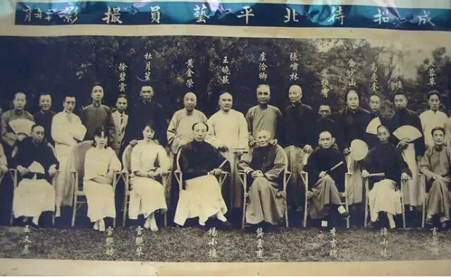

1．不吸烟不饮酒的人，都很自私。一般不可托终生。
2．对你吹拍人，最可能背叛你。伤你最深的人，一定是你最爱的人。百分之七十的凶杀案发生于熟人之间。“生虎犹可近，熟人不可亲。”
3．胆小的男孩一般能成大事。打仗前思后想的，才是帅才。流泪的男人一定有爱心。举棋不定是一种美德。
4．爱骂人的人，内心都很恐惧。长角的动物都不是食肉动物。一群人中最安静的人往往最有实力。“动如火掠，不动如山。
5．背叛你的女孩，再侮辱你，一生命薄。恶有恶报。早年的“班花、校花”，有几个会有晚年的幸福？“猛虎别在当道卧，困龙也有上天时。”
6．重情之人，难有爱情之幸福。当你说岀爱字，你就处于被动。爱情的真谛是“欲擒故纵”，鲜花大都插在牛粪上。“骏马常驮痴汉走，巧女常伴愚夫眠。”
旧上海老大杜月笙语录，很值得看
1.不要怕被别人利用，人家利用你说明你还有用。
2．做人有三碗面最难吃：人面 \场面 \情面。
3．头等人，有本事，没脾气；二等人，有本事，有脾气； 末等人，没本事，大脾气。
4．杜月笙有句挂在嘴上的话：小心得天下，大意失荆州。
5．人活在世上要靠两样东西，胆识和智慧。
6．事不要做绝，要留有余地。
这些话说给懂得人听
1．打什么都别打女人。打了，你就什么理由都没有了。
2．伤什么都别伤心爱人的心。伤了，你就真的没有机会了。
3．不要用女朋友的数量来显示你的魅力。你完全可以用事业和顾家好男人来展示你的优秀。
4．学会帮女人做家务。一个回家就只是躺在沙发上等待老婆开饭的男人，会让婚姻生活淡的比白开水还无味。
5．如果你爱一个人，请你温柔的呵护她；如果不爱，直说。女人都很傻的，从她爱上你的那一刻，便身心俱付。
6．帮你爱的人买礼物。你赚钱为了什么？而且，一个真正爱你的人是不会乱花你的钱的。
7．不要真的以为得不到的才是最好的。还不如好好珍惜现在拥有的。
8．你工作再忙，也要记得打个电话给你心爱的人，不会花掉你太多时间金钱．因为她在等待，少给她失望。
9．女人是用来疼的，如果你没有把握让一个女人幸福，反倒一直给他难过痛苦，请记住这不是在爱她。
10．不要认为每个女子都爱钱如命。你赚钱很辛苦，但这个世界上能养活自己的女人比比皆是。
11．记得给她家里打电话，而不是她催着你打。人家老人家将养了几十年的女儿嫁给你，那是你多么大的福分。
12．记得她的生日，否则有可能下一个生日她跟别人过去了。
13．不要认为情人节送花是无聊的行为。又不是每天都要你送，找那么无聊的借口干嘛？
14．抽固定的时间陪她。你工作都是为了生活，那么，她应该是你生活里最重要的一部分。
15．牵她的手漫步。两个人走路，不是为了让别人看，是要两个人感觉幸福。因为十指相握是幸福。
16．不管你在世界的哪个地方，当你的太太要生孩子时，一定要在她身边。
17．想她的时候，告诉她。爱她的话，要说出来．她听后也一样的爱你。
18．爱情生活或者婚姻生活是两个人的，所以不必太自我，多为对方着想和付出。
19．偶尔给对方惊喜。爱情不一定常常在激情的最顶端，但是你可以学会制造浪漫。不要让爱情变得空洞无味。
20．有了矛盾，立刻解决。否则怨恨会像无底洞，吞噬了你们的感情，难以重合。
21．一起去看电影。不一定所有情节你们都记得，但是她会很久很久以后还记得你曾陪她看过电影。
22．陪她外出散心，顺便加深感情。女人喜欢放松时男人说的心里话。
23．吃东西时，不要傻傻的问：你吃不吃？更不要在对方说不想吃之后就立即吃个精光。那是自私的表现。
24．她有人追求，说明她很有魅力，不要因此发无名火，吃无名醋。更不能误会，而是要更加去好好爱。

处事计策
1．看穿但不说穿。很多事情，只要自己心里有数就好了，没必要说出来。
2．高兴，就笑，让大家都知道。悲伤，就假装什么也没发生。
3．在不违背原则的情况下,对别人要宽容 ,能帮就帮, 千万不要把人逼绝了 ,给人留条后路……
4．快乐最重要，谁人、何物、何事使你快乐，你就同他们在一起。何物让你不快乐，你就离开他。没有条件，创造条件也要离开他。
5．不要老在别人面前倾诉你的困境袒露你的脆弱。
6．没有十全十美的东西，没有十全十美的人，关键是清楚到底想要什么。得到想要的，肯定会失去另外一部分。如果什么都想要，只会什么都得不到。
7．我喜欢一位朋友说的这句“善忘是一件好事。”
8．两个人同时犯了错，站出来承担的那一方叫宽容，另一方欠下的债，早晚都要还。
9．自己不喜欢的人，可以报之以沉默微笑；自己喜欢的人，那就随便怎么样了，因为你的喜爱会挡也挡不住地流露出来。
10．不要做刺猬,能不与人结仇就不与人结仇 ,谁也不跟谁一辈子 ,有些事情没必要记在心上。
11．学会妥协的同时，也要坚持自己最基本的原则。
12．不要停止学习。不管学习什么，语言，厨艺，各种技能。
13．钱很重要，但不能依靠男人或父母，自己一定要保持一定赚钱的能力……
14．不要太高估自己在集体中的力量，因为当你选择离开时，就会发现即使没有你，太阳照常升起....
15．过去的事情可以不忘记，但一定要放下。
16．即使输掉了一切，也不要输掉微笑……
17．不管做了什么选择，都不要后悔，因为后悔也于事无补。
18．不要因为冲动说一些过激的话。
19．不要轻易许下承诺，做不到的承诺，比没许下更可恶。
20．不要觉得不了解也会有爱情。在不了解的时候，我们仅仅是喜欢，达不到爱情。当彼此的缺点暴露出来以后，很多时候这喜欢也就会结束了。
21．说话时可以很直接，人很直爽，总比虚伪好。
22．对自己好一点，心情不好的时候，什么都别考虑，去吃自己爱吃的吧！